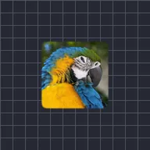

マットチョーカー

レイヤーの不透明な部分の輪郭を内側から削って縮小します。
設定
| 設定項目 | 種類 | 範囲 | デフォルト |
|---|---|---|---|
| サイズ | 数値 | 0〜300 | 10 |
| チョーク | 数値 | 50%〜100% | 75% |
| ぼかし | 数値 | 0.001〜0.5 | 0.1 |
| 反転 | オン／オフ | – | オフ |

レイヤーの不透明な部分の輪郭を内側から削って縮小します。
| 設定項目 | 種類 | 範囲 | デフォルト |
|---|---|---|---|
| サイズ | 数値 | 0〜300 | 10 |
| チョーク | 数値 | 50%〜100% | 75% |
| ぼかし | 数値 | 0.001〜0.5 | 0.1 |
| 反転 | オン／オフ | – | オフ |